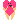
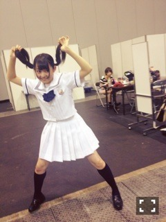
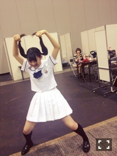

| 2013/07 07 Sun | 455回目*marika |
全国握手会in名古屋
みさ先輩と影ナレしましたー
みさ先輩と私の関係すきって
言ってくれる人多くて嬉しい♪
ミニライブ
♪ガールズルール
♪扇風機
ー握手会レーン抽選会ー
♪コウモリよ
♪世界で一番孤独なLover
こんな感じだったよー
楽しかったあ
特にコウモリよのバッグダンス。
初披露だったんだけど、
どんな反応するか楽しみにしてたの。
あんなに髪振り回したの初めて

抽選会はガチだから
誰になるかなーって考えてたけど
まさかのずー笑
じんちゅーずレーンが叶いました

ひょー
今日の髪型がツインテール
だったんだけどかずみが
合わせてくれたよ

かずみなんだかんだ喜んでた←
握手会楽しかったおおおお
威嚇
みなさんとお会いするのが
プリンシパル以来だったから
妙に緊張したな。
でもやっぱり握手会すきです。
いつも元気をありがとうございます。


楽しかった！！！！！！
まりか
コメント(325)
2013/07/07 22:06